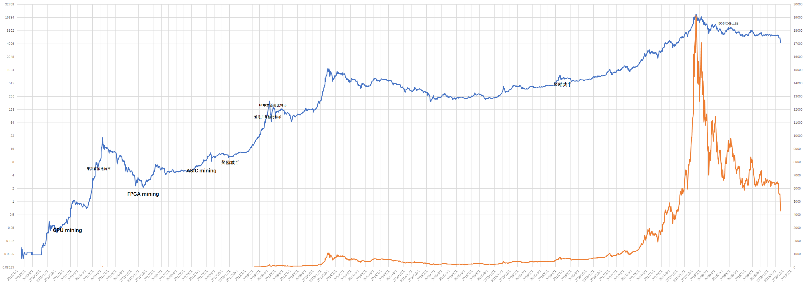

The chart of historical price of Bitcoin up to 2018/06/26,

My recommended books for Bitcoin, Ethereum and blockchain technologies:
People:
- Marc Andreessen;
- Gavin Andresen;
- Andreas Antonopoulos;
- Wences Casares;
- Tim Draper;
- Hal Finney;
- Mark Karpelès;
- Charlie Shrem;
- Nick Szabo;
- Amir Taaki;
- Roger Ver;
- Erik Voorhees;
- Cody Wilson;
- Winklevoss twins: In April 2013, the brothers claimed they owned nearly 1% of all bitcoin in existence at the time.
Bitcoin Pizza Day (5×16×16+2×16+2=1314): On May 17, 2010, Laszlo Hanyecz posted a request to buy pizza with bitcoin. It was on May 22 that he reported successfully trading 10,000 BTC for two pizzas, with Jeremy Sturdivant (Jercos) ordering the pizza and receiving the coins.
May 18, 2010, 12:35:20 AM
I'll pay 10,000 bitcoins for a couple of pizzas.. like maybe 2 large ones so I have some left over for the next day. I like having left over pizza to nibble on later. You can make the pizza yourself and bring it to my house or order it for me from a delivery place, but what I'm aiming for is getting food delivered in exchange for bitcoins where I don't have to order or prepare it myself, kind of like ordering a 'breakfast platter' at a hotel or something, they just bring you something to eat and you're happy!
I like things like onions, peppers, sausage, mushrooms, tomatoes, pepperoni, etc.. just standard stuff no weird fish topping or anything like that. I also like regular cheese pizzas which may be cheaper to prepare or otherwise acquire.
If you're interested please let me know and we can work out a deal.
Thanks,
Laszlo
May 18, 2010, 06:42:11 PM
jercos: In which country do you live?
May 18, 2010, 06:46:48 PM
laszlo:
Jacksonville, Florida
zip code 32224
United States
May 18, 2010, 07:01:50 PM
ender_x:
10,000... Thats quite a bit.. you could sell those on https://www.bitcoinmarket.com/ for $41USD right now..
good luck on getting your free pizza.
May 21, 2010, 09:33:45 PM
laszlo: I just think it would be interesting if I could say that I paid for a pizza in bitcoins
May 22, 2010, 07:17:26 PM
laszlo: I just want to report that I successfully traded 10,000 bitcoins for pizza.
Pictures: http://heliacal.net/~solar/bitcoin/pizza/
Thanks jercos!
May 22, 2010, 10:10:25 PM
sirius: Congratulations laszlo, a great milestone reached
Has Jeremy Sturdivant (Jercos) been a millioniare? Here is an interview with Jercos five years later.
Q: What do you primarily use bitcoins for? Do you still control millions of dollars worth?
A: Bitcoin as a currency is meant to be spent. Those 10,000 BTC made it back into the economy fairly quickly, around the time they were worth some $400.